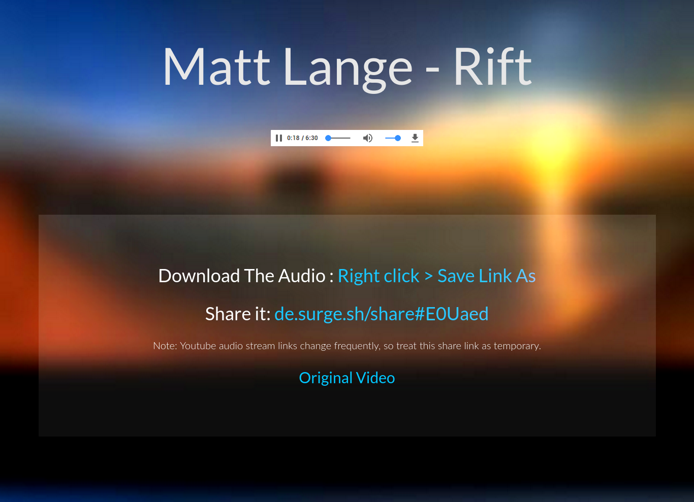

Youtube Downloader
Drag the YouTube Downloader to your bookmarks bar, then click it while you are watching a YouTube video
On click, you will be redirected to a page like this:

How does this work?
Download The Audio :
Right click > Save Link As
Share it:
Note: Youtube audio stream links change frequently, so treat this share link as temporary.
Original Video